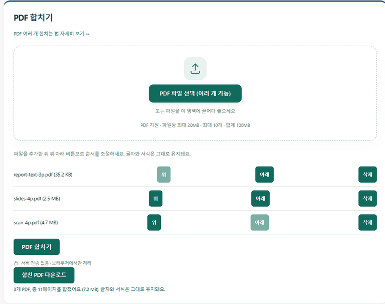

IMAGE TOOLBOX / GUIDE
PDF 파일 여러 개, 하나로 합칠 수 있을까
이 사이트에서 PDF 파일 여러 개를 글자와 서식 그대로 하나로 합치는 방법과 한계를 정리했습니다.
이 사이트에서 PDF 합치기
PDF 변환 도구의 'PDF 합치기'에서 이미 만들어진 PDF 파일을 최대 10개까지 선택해 하나로 합칠 수 있습니다. 파일당 최대 20MB, 합계 100MB까지 지원합니다. 파일을 추가한 뒤 위·아래 버튼으로 순서를 정하고 'PDF 합치기'를 누르면 됩니다.
이 기능은 페이지를 이미지로 바꾸지 않고 그대로 복사해서 이어 붙입니다. 그래서 글자를 선택·검색하는 기능과 서식이 유지되고, 용량도 원본들의 합계와 거의 같습니다.
직접 합쳐 본 결과: 종류가 다른 PDF 3개
성격이 전혀 다른 PDF 세 개를 순서대로 합쳤습니다. 글자로 된 보고서, 사진이 들어간 가로형 발표 자료, 종이를 스캔한 문서입니다.
| 순서 | 파일 | 페이지 | 용량 |
|---|---|---|---|
| 1 | 글자 보고서(A4 세로) | 3 | 35.2KB |
| 2 | 발표 자료(가로) | 4 | 2.5MB |
| 3 | 스캔 문서(A4 세로) | 4 | 4.7MB |
| 합친 결과 | 11 | 7.2MB | |
합치는 데 0.3초가 걸렸고, 결과 용량(7,589,841바이트)은 원본 합계(7,597,502바이트)와 0.1%밖에 차이 나지 않았습니다. 첫 페이지의 글자는 합친 뒤에도 그대로 선택·검색됐고, 가로 페이지는 가로로, 세로 페이지는 세로로 섞인 채 이어졌습니다.

한계
암호가 걸린 PDF는 합칠 수 없습니다(먼저 암호를 풀어야 합니다). PDF 안의 책갈피(목차 링크)나 양식 입력칸은 합친 결과에서 유지되지 않을 수 있습니다. 한 번에 합칠 수 있는 파일은 10개, 합계 100MB까지입니다. 이를 넘으면 두 번에 나눠 합친 뒤 결과를 다시 합치면 됩니다.
합친 PDF 안에서 특정 페이지만 빼거나 순서를 섞는 편집 기능은 없습니다. 파일 단위로만 순서를 정할 수 있으니, 페이지 단위 편집이 필요하다면 PDF 편집 프로그램을 쓰는 편이 맞습니다.
합친 뒤 용량이 크다면: 무엇이 섞여 있는지부터 보세요
합친 PDF가 업로드 제한을 넘는다면 PDF 용량 줄이기로 한 번 더 줄일 수 있습니다. 다만 이 기능은 페이지를 이미지로 다시 만들기 때문에 어떤 PDF냐에 따라 결과가 정반대입니다. 위에서 쓴 세 파일을 각각 세 단계로 줄여 봤습니다.
| 파일 | 원본 | 고화질 | 보통 | 최대 압축 |
|---|---|---|---|---|
| 스캔 문서 | 4.7MB | 1.1MB | 579.6KB | 312.1KB |
| 발표 자료 | 2.5MB | 330.8KB | 185.1KB | 106.6KB |
| 글자 보고서 | 35.2KB | 681.1KB | 390.2KB | 205.3KB |
스캔 문서와 사진이 든 발표 자료는 77~96% 줄었지만, 글자 보고서는 최대 압축에서도 원본의 약 6배로 커졌습니다. 그래서 글자 PDF와 스캔 PDF를 합칠 계획이라면, 스캔 PDF만 먼저 줄인 뒤 합치는 순서가 가장 좋습니다. 글자 PDF는 그대로 두면 가볍고 검색도 되기 때문입니다. 줄인 페이지는 글자를 선택하거나 검색할 수 없다는 점도 알아두세요. 자세한 내용은 PDF 파일 용량 줄이는 법에 정리했습니다.
자주 묻는 질문
이 사이트에서 PDF 두 개를 바로 합칠 수 있나요?
네. PDF 변환 도구의 'PDF 합치기'에서 PDF를 2개 이상(최대 10개) 선택하고 순서를 정한 뒤 합치면 됩니다. 서버로 업로드되지 않고 브라우저 안에서 처리됩니다.
합친 PDF도 텍스트를 검색하거나 복사할 수 있나요?
네. 페이지를 이미지로 바꾸지 않고 그대로 복사해 이어 붙이기 때문에, 원본에서 선택·검색되던 글자는 합친 뒤에도 그대로 선택·검색됩니다. 테스트에서도 첫 페이지 글자가 그대로 선택됐습니다.
합치면 용량이 늘어나나요?
거의 그대로입니다. 테스트에서 PDF 3개(합계 7,597,502바이트)를 합친 결과가 7,589,841바이트로, 차이는 0.1%였습니다.
합치려는 PDF가 총 100MB가 넘으면 어떻게 하나요?
합계 100MB와 10개 제한이 있어서 한 번에 합칠 수 없습니다. 몇 개씩 나눠 먼저 합친 뒤, 결과 PDF들을 다시 합치면 됩니다.
암호가 걸린 PDF도 합칠 수 있나요?
아니요. 암호가 걸린 PDF는 합칠 수 없다는 안내가 나옵니다. 이 사이트는 암호 해제 기능을 제공하지 않으므로, 별도 프로그램으로 암호를 해제한 뒤 이용해주세요.
페이지 방향(회전)이 다른 PDF끼리도 합쳐지나요?
네. 각 페이지는 원본의 크기와 방향을 그대로 유지한 채 이어 붙습니다. 테스트에서도 가로 발표 자료와 세로 보고서가 그대로 섞여 이어졌습니다.
스캔한 사진 여러 장을 합치는 것도 같은 방법인가요?
사진(JPG·PNG 등)을 순서대로 PDF로 만드는 것은 '이미지 → PDF' 기능을 쓰세요. 이미 PDF가 된 파일끼리 합칠 때만 'PDF 합치기'를 쓰면 됩니다. 방법은 여러 장 사진을 PDF로 합치는 법에 있습니다.